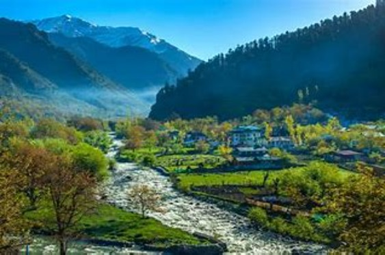

Chatpal

Chatpal is a secluded and picturesque hamlet nestled in the Anantnag district of Jammu and Kashmir, India. It's a pristine paradise, largely untouched by tourism, offering a serene escape into nature with its lush green meadows, dense forests, and crystal-clear streams set against the backdrop of the majestic Himalayas. Ideal for those seeking peace and solitude, Chatpal is perfect for trekking, nature walks, and cultural immersion into the Kashmiri way of life. This hidden gem provides a unique opportunity to experience untouched beauty and tranquility in one of the most beautiful regions of India.
Location
Hemis
Hemis, located in the Ladakh region of Jammu and Kashmir, India, is famous for the Hemis Monastery, one of the largest and most significant Buddhist monasteries in the Himalayas. Founded in the 17th century, it belongs to the Drukpa Lineage of Tibetan Buddhism. Hemis is renowned for hosting the annual Hemis Festival, a colorful celebration marking the birth anniversary of Guru Padmasambhava (Guru Rinpoche), who is revered for introducing Buddhism to Tibet. The festival features elaborate mask dances (Chams), traditional music, and a vibrant display of local handicrafts, attracting visitors from across the globe.
Apart from its cultural and religious significance, Hemis is also the gateway to the Hemis National Park, a sanctuary famous for its high-altitude ecosystem and as the home to the elusive snow leopard. The park offers opportunities for trekking and wildlife watching in one of the most preserved areas of the Ladakh region. Hemis's unique blend of natural beauty, rich culture, and spiritual heritage makes it a must-visit destination for those exploring the Himalayas.
Location
Bangus Valley
Bangus Valley, nestled in the Kupwara district of Jammu and Kashmir, India, is a hidden natural treasure characterized by sprawling, lush green meadows, dense forests, and a tranquil atmosphere. This serene and less explored valley offers a peaceful retreat away from the bustling tourist spots, making it an ideal destination for nature enthusiasts and those seeking solitude amidst nature's pristine beauty. With its rich biodiversity and stunning landscapes, Bangus Valley remains one of the most picturesque and untouched locations in the Himalayan region. lush green meadows, dense forests, and a tranquil atmosphere. This serene and less explored valley offers a peaceful retreat away from the bustling tourist spots, making it an ideal destination for nature enthusiasts and those seeking solitude amidst nature's pristine beauty. With its rich biodiversity and stunning landscapes, Bangus Valley remains one of the most picturesque and untouched locations in the Himalayan region.
Location